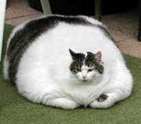

OBESIDADE FELINA
Saiba como evitar:
.jpeg)
Alguns animais sofrem com problemas de saúde muito comuns, que demandam certa atenção e cuidados especiais de seus tutores. Uma dessas complicações é a obesidade felina. Por isso, nós preparamos esse artigo para que você entenda mais sobre o ganho excessivo de peso por gatos em diferentes idades e rotinas.
A obesidade é um assunto muito sério que, além de comprometer a qualidade de vida do bichinho, pode ser um ponto de início para o desenvolvimento de outras doenças.

Muitos gatos acabam se acomodando a uma rotina sedentária, permanecendo boa parte do dia dentro de casa ou em apartamento e isso limita seus hábitos instintivos de atividade física. Portanto, é fundamental que o tutor incentive o seu animal a fazer exercícios.
Muitas dessas atividades podem ocorrer durante momentos de lazer, com brincadeiras e joguinhos lúdicos, com brinquedos e acessórios apropriados. A quantidade diária de exercícios deve ser definida pelo veterinário, com base na condição física do animal.